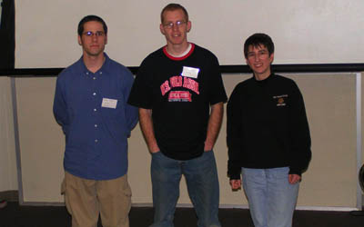
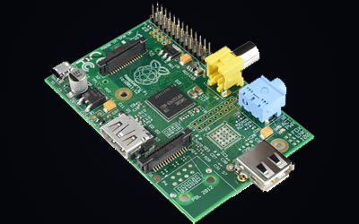
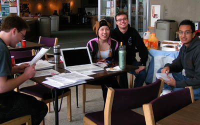
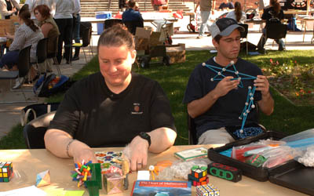
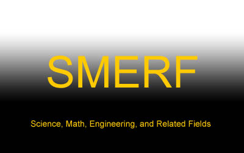

Career Panel
Each year, the Math/CS club hosts a dinner where speakers from across the region are brought to discuss their fields of work with students. Past speakers have included cybersecurity researchers at the Idaho National Lab, actuarial directors, software architects, and mathematics professors.
Raspberry Pi Development
The Raspberry Pi is a small, fully functional computer which is capable of running many different types of software for use in a variety of different projects. The club recently acquired a Raspberry Pi and we will soon begin working on projects that integrate this device.
Meetings Every Other Week
These meetings are where the bulk of club planning and regular activites take place. We meet to discuss interesting topics we have encountered, as well as plan future events that the club will be invovled in.
Inter-Club Activities and Fundraisers
We work with other clubs to both raise money and meet new people that can expand our educational horizons. This provides an excellent chance to network with other students and faculty.
SMERF Talks
Presentations given by undergraduate students at Idaho State University offer a unique opporunity for presenters to hone their skills and show off their research. It also gives the audience a chance to learn about the excellent work being done by their fellow students and learn about new areas that may be of interest.